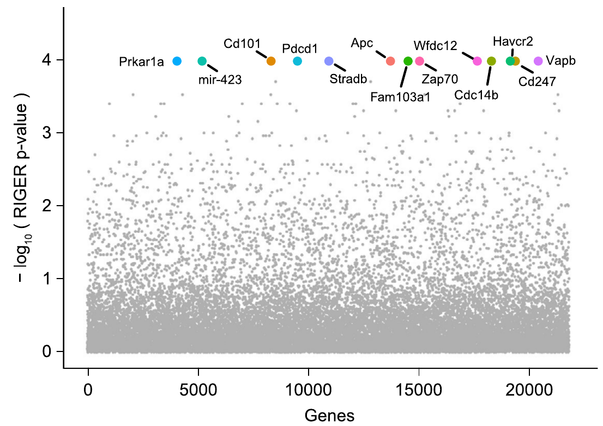
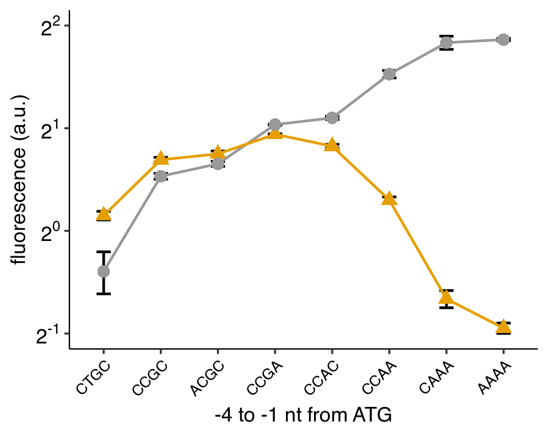
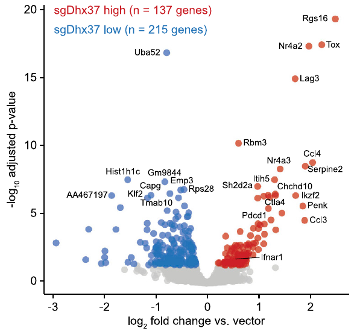
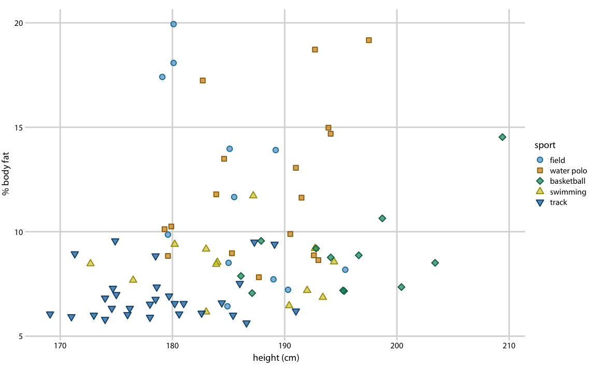
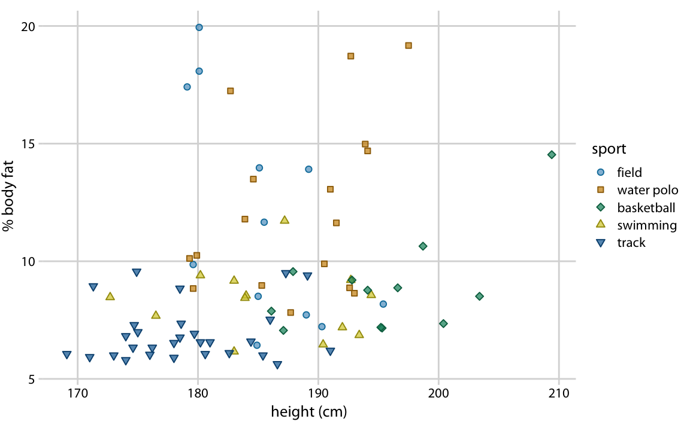
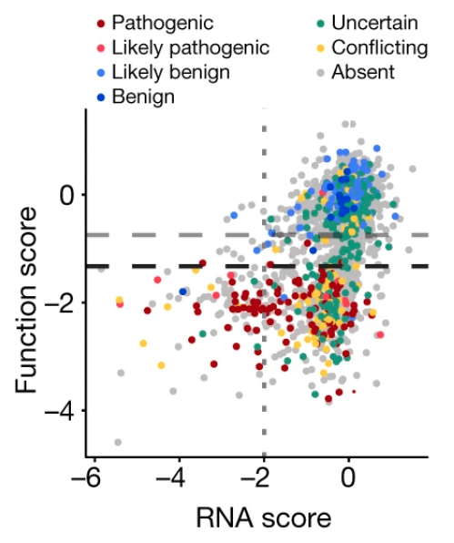
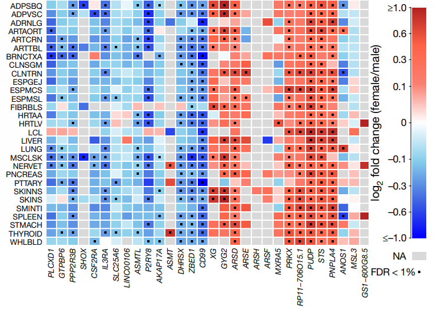
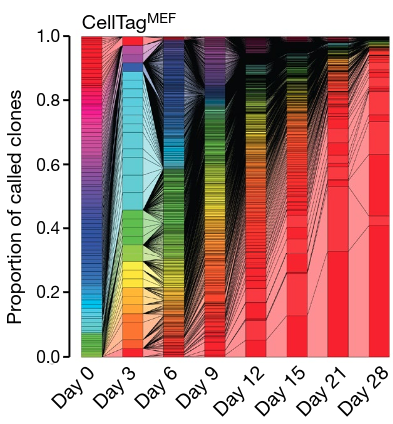
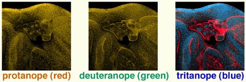
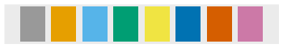

Lecture 5 – Principles of Data Visualization
Arvind R. Subramaniam
Assistant Member
Basic Sciences Division and Computational Biology Program
Fred Hutchinson Cancer Research Center
Learning Objectives
- Know general dos and donts of data visualization
- Know about different types of data visualization
- Effective strategies for visualization
Useful reference
(Source of many figures in this lecture)
Fundamentals of Data Visualization by Claus O. Wilke
Goals of Visualization
- Show experimental design and results
- Show relationships among variables
- Range and interval of a variable
Same data can be visualized very differently

Same data can be visualized very differently

Same data can be visualized very differently

Elements of a visualization
- Aesthetics
- Scales
- Labeling
- Exporting
Aesthetics

How do you pick the type of aesthetics?
- How many variables and data points do you want to show?
- Is your data continuous or discrete?
- Is there a natural order of discrete variables?
Scales

Log axes suitable for P-values

Log axes suitable for fold-changes

Log-log plots are common in biology

Labels
If you take away only one single lesson from this book, make it this one: Pay attention to your axis labels, axis tick labels, and other assorted plot annotations. Chances are they are too small. In my experience, nearly all plot libraries and graphing softwares have poor defaults. If you use the default values, you’re almost certainly making a poor choice.
Cannot-read labels

Small labels

Appropriately-sized labels

Too-big labels

Seemingly big but ok labels

Exporting
- Finalize the figure within R as much as possible.
- Use vector graphics for saving: PDF or SVG.
- Inkscape – useful open source vector graphics program for editing figures.
- Make sure that text can be edited when you open the image.
Colors
Why use colors?
- As a tool to distinguish
- To represent data values
Color to distinguish groups

Color to represent quantitative data

How to choose colors
Avoid using many colors in a single graph

How to choose colors

Use colorblind-friendly palettes

Different types of data that we want to visualize
| Amounts |
| Distributions |
| Proportions |
| X-Y Relationships |
| Uncertainty |
Common types of data visualizations
| Scatter plot |
| Line graph |
| Bar graph |
| Pie charts |
| Heat map |
| Bar and whisker plots |
| Violin plots |
Visualizing uncertainty
| Standard Error |
| Confidence Intervals |
Standard deviation or standard error?
Standard deviation does not decrease with more measurements.